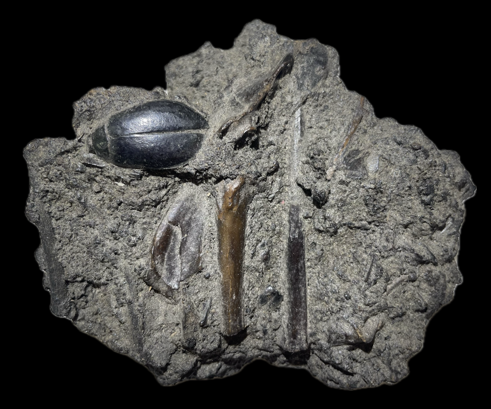
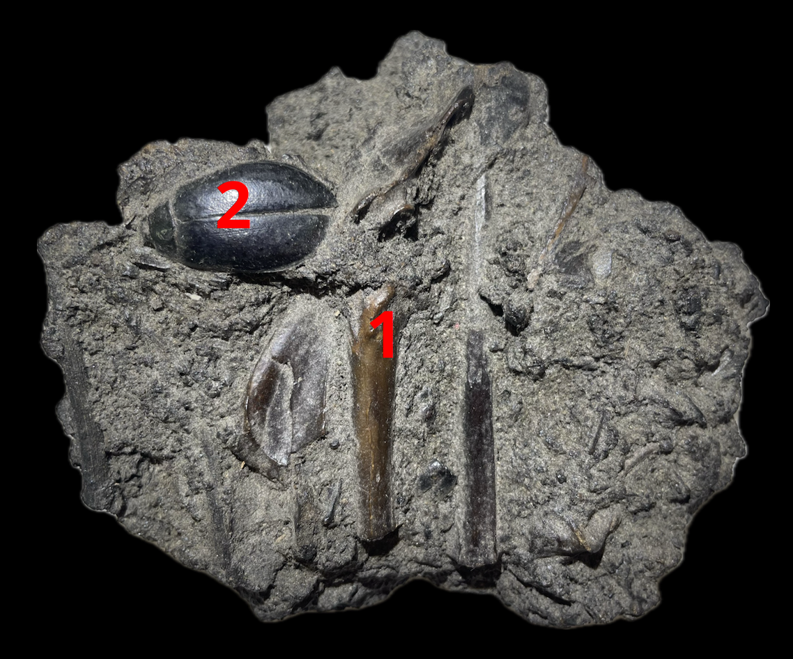

HOME
Vertebrate
1. Vertebrates indet.
2. Cybister explanatus
• Pleistocene
• La Brea Tar Pits
• Los Angeles County, California, USA
Size: 11 cm across the slab

Copyright © 2024 by Samuel Kim, all rights reserved